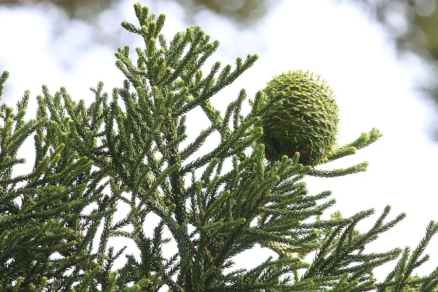

乔木 · 植物界
南洋杉 Araucaria cunninghamii

原产澳大利亚的常绿针叶大乔木，树冠塔形、枝叶层次分明，是热带亚热带地区常见的园林景观树种。
- 分类
- 门裸子植物门纲松柏纲目松柏目科南洋杉科属南洋杉属
- 栖息环境
- 海拔 800 米以下的热带亚热带地区，喜高温多湿、光照充足
- 地理分布
- 原产澳大利亚东北部，中国广东、广西、福建、海南等地栽培
- 保护级别
- 暂无评估；中国未列入国家重点保护野生植物名录
物种志
南洋杉为常绿针叶大乔木，高可达 60 m，树干通直，树皮灰褐色、横裂并呈条片状剥落；树冠塔形，侧枝轮生、平展，小枝上叶片鳞状或钻状，排列紧密。雌雄异株或同株，雄球花圆柱形，雌球花球形；球果大，木质鳞片开裂后散出带翅种子，种子可食。
南洋杉原产澳大利亚东北部，中国广东、广西、福建、海南、云南等地栽培，喜高温多湿、光照充足，适宜深厚肥沃、排水良好的酸性土壤，不耐寒。因树形挺拔、枝叶层次分明，是热带亚热带地区著名的园林景观树种，常作为行道树与公园孤植树；木材可供建筑与家具用，种子可食。南洋杉与同属的诺福克南洋杉外形相似，后者树冠更开阔、叶片更柔软。
形态与习性
- 株高可达 60 m，树干通直
- 花期春季，球花单性
- 球果成熟翌年成熟，木质鳞片开裂
- 光照喜光，不耐长期荫蔽
- 水分喜湿润，怕积水
- 主要用途园林景观、建筑与家具用材、种子可食
趣味知识
- 南洋杉的侧枝轮生平展，树冠呈塔形，枝叶层次分明，非常醒目。
- 南洋杉的球果木质鳞片很大，开裂后散出带翅种子。
- 南洋杉原产澳大利亚，是热带城市常见的景观树种。